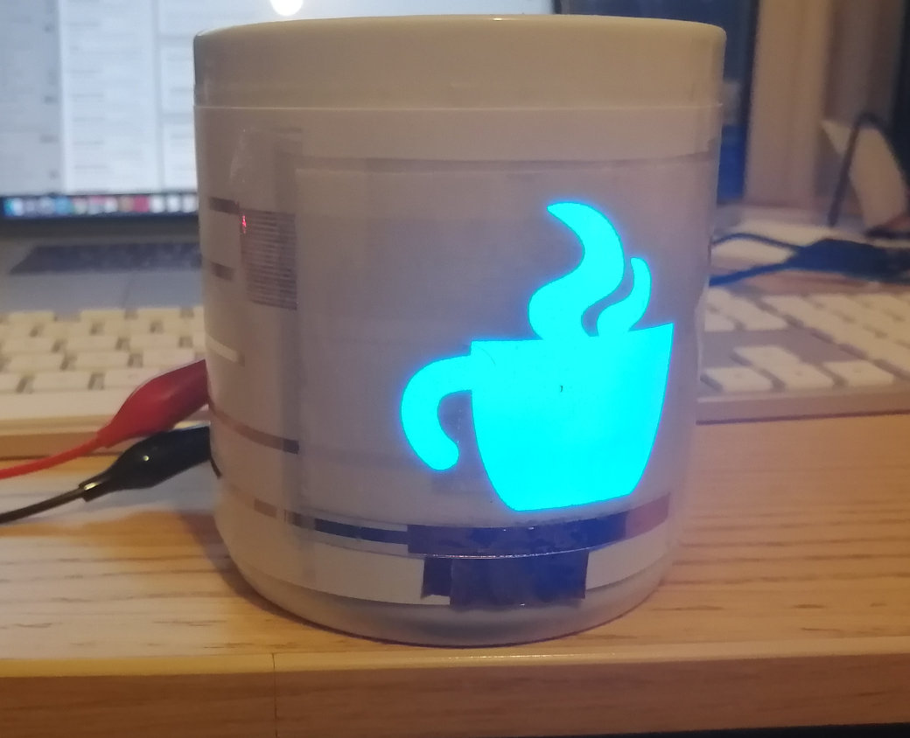
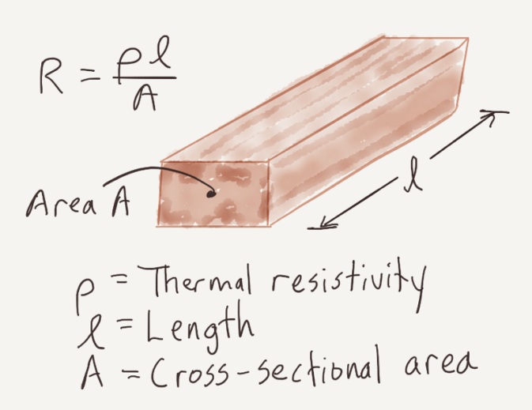
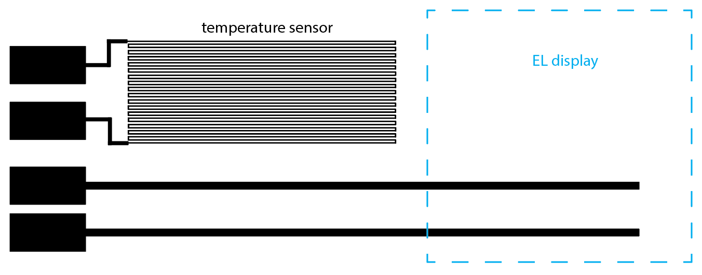
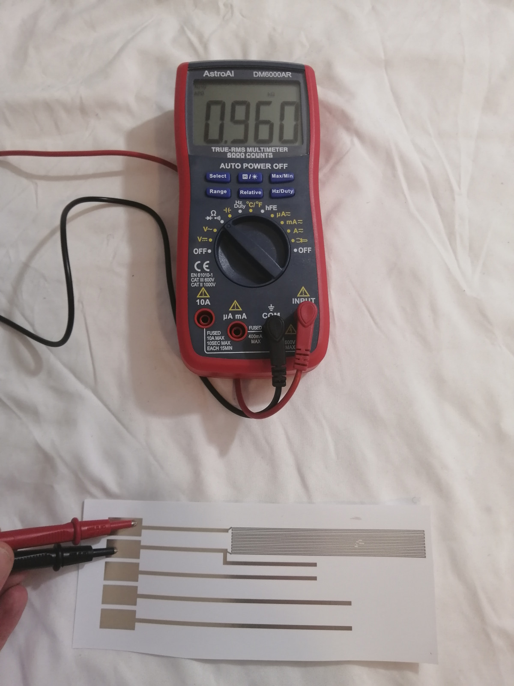
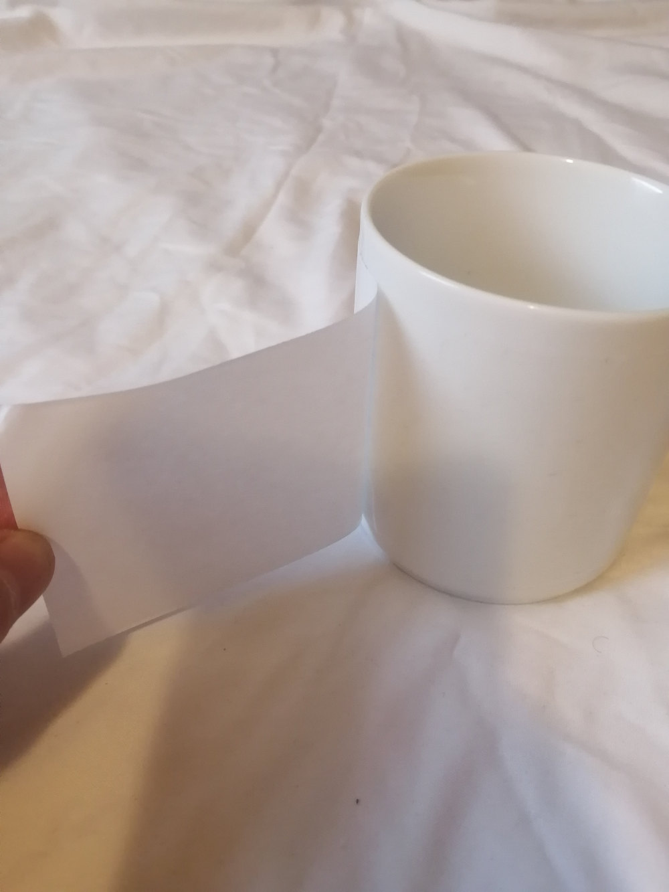
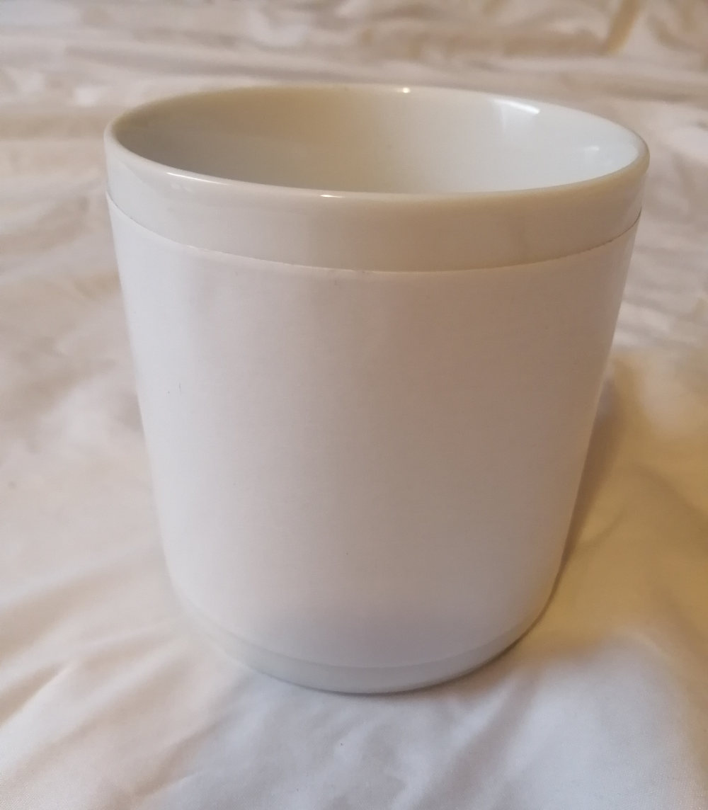
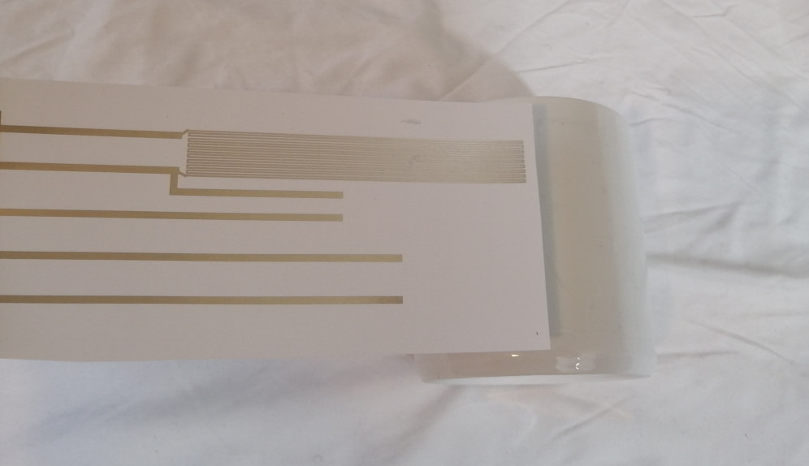
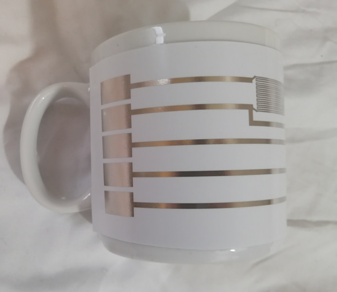

6.810 Engineering Interactive Technologies (fall 2020)
Building an Interactive Mug
In this lab, we will build an interactive mug that can sense its own temperature and signal the user if the content is too hot, too cold or just right. We will design an ink-jet printed temperature sensor to sense the heat of the mug and we will use the display which you sprayed in the last lab to signal to the user the current temperature of the mug's content.
Your Task for Today
You will create the interactive mug by following these steps:
- Design an inkjet printed temperature sensor using Processing.
- Extend the inkjet printed temperature with wires to attach to your sprayed electrolumiscent (EL) display, then fabricate it.
- Connect the EL display to the printed circuit and attach both to the mug.
- Build the circuit to read the temperature and control the EL display accordingly.
- Write the code that reads the mug's current temperature and that adjusts the brightness of the EL display accordingly, blinking when its contents are way too hot.

Deliverables Lab 4 (due Friday, Oct. 2, 2020, 11.59pm)
At the end of Lab 4, upload to your student google drive:
- the Processing code (.pde) to generate a temperature sensor
- the Arduino code (.ino) for controlling your display and reading the temperature
- 2-3 photos (.jpg or .png) from different angles of your mug
- a short video (.mov or .mp4, max. 1 minute) showing how you display's brightness increases when pouring in boiling hot water. It should start blinking after a few seconds when the mug reaches a high enough temperature.
(1) Designing the inkjet printed temperature sensor
First, you will use conductive inkjet printing to make your own temperature sensor from scratch.
Why can conductive wires be used to sense temperature?
To sense temperature using conductive wires, you will make use of a material property that most conductive metals share. Their resistance increases at higher temperatures. The higher the resistance of the conductive wire, the more it will react to temperature changes.
How can we create a high resistance in a conductive wire?
If you look at the image below, you can see that the resistance of a conductive wire is determined by its cross-section A and its length l. Note that when we talk about the cross-section A in our example here, we mean the width of the wire since the height will be the same for all our prints.
To create a high resistance for our purposes, what can you say about the cross-section A and the length of the wire l?
Should they be larger or smaller?

To have a high resistance, the cross-section A (width of the wire) should be as small as possible, and the length of the wire should be as large as possible.
The thermal resistivity p of the material of course also plays a role, i.e. the larger it is the higher the resistance, but since we print all our circuits with the same material, i.e. silver, we can't change it anyways so we can ignore it for now.
Shaping the conductive wire for high resistance:
As you just figured out, the thinner and longer the conductive wire the higher the resistance, which helps us to sense temperature changes more precisely. Thus, a well designed temperature sensor should consist of a long and thin ink-jet printed silver trace such that small variations in resistance have a large effect on the overall resistance. (I don't understand this, shouldn't then a small resistance be better to begin with since changes have a larger effect?)
A classic method to create a long and thin wire on a small area is to design it in a horse shoe pattern similar to this:

We can measure that a 0.3mm thin silver trace has a resistance of 7.5 Ohm/cm (up to variations of the used printer and paper). We can estimate the resistance of a trace of length l by calculating
resistance = l * 7.5 Ohm/cm
Our temperature sensor should have an overall resistance of 1kOhm.
You task is to write a Processing Script that generates a temperature sensor layout with a given width and overall resistance. You can reuse code from PSET 1 to write this script. In detail, this involves the following features:
- Read in Input: sensor width, and overall resistance
- set the line width to 0.3mm
- generate a set of horizontal lines of the given width and connect them with horizontal traces on alternating sides
- the distance between each horizontal trace should be 0.5mm
- output a .pdf that contains the temperature sensor
Generate a temperature sensor for your interactive mug that has a width of 7cm, and 1kOhm overall resistance. We will use the layout in our circuit design for the mug in the next step.
Integrating the temperature sensor in the mug circuit
Our mug should house a temperature sensor and the EL display that we sprayed in the last lab. Altogether we need:
- a temperature sensor near the mug's handle
- an EL display on the opposite side of the handle (no overlap with the temperature sensor)
- 4 connector pads to connect the ESP32 to the mug's electronics
- 2 printed wires that connect the temperature sensor to the connector pads
- 2 printed wires that connect the EL display to the connector pads
- 2 printed wires that connect the EL display to the connector pads (width a distance of a least 3cm at the location where they connect to the EL display to avoid shortcuts)
The final design should fit nicely on the mug. Thus, aim for 17cm total width and 7.5cm height. The layout should look similar to this:

The two wires to the EL display have to be tailored for your individual display. After the spraying session, some of you put the copper tape to the ITO on the top of the display. In this case, the wires have to be places at the top of mug (and not at the bottom as in the example above).
Ink-jet print your circuit
You will print your circuit in an OH. Before you come, make sure that the wires to the EL display are at the right position for YOUR display, the temperature sensor does not overlap with the display, and the temperature sensor has approximately a resistance of 1 kOhm using the formula above.
When you come to the OH
You will need several components to build you mug, so make sure to pick up:
- the mug
- a 1 kOhm resistor
- a roll of copper tape
Test resistance of your temperature sensor
Once your print is done, you should check if the temperature sensor has a high enough resistance. Lay the circuit on a flat surface and check the resistance of the temperature sensor with a multi meter by holding the electrodes on the two corresponding connector pads. You should read a value close to 1 kOhm.

Attach EL Display on the Circuit
Once you have printed your circuit and verified that the temperature sensor is valid, you have to attach your EL display to it. First lay your circuit on a flat surface. Take a roll of copper tape and cut of two 6cm long pieces. Glue one half of each copper stripe on the two wires and bend the other half around such that the adhesive side faces upwards. Make sure that the two copper stripes don't connect to each other and have save distance of at least 1cm.
Next, push your display onto the copper stripes. Make sure that one electrode only connects to the ITO and the other only connects to the sprayed copper layer.
Now, it's time to test if the connection between the display and the printed traces is working. Take a battery and inverter and connect it to the two connector pads on the left hand side of the circuit. You should see that the displays light up. We will have an inverter and power supply at the OH, so you don't have to bring your own.
Once, we have verified that everything works, we want to fix the display on the circuit sheet. Take some scotch tape and apply a stripe on the left the right edge of your display.
Attach printed UI on the Mug
We will use double sided tape to attach the printed UI to the mug. In the OH, cut off a 17cm (or according to the length of your individual design) from the tape and attach it on the mug. Remove the protective foil from the tape such that it is also adhesive on the top side.


Next, take your printed UI and glue it onto your mug.


The display should be turned off when the mug is cold. It should increase its brightness up to approx. 70C and start blinking if it is too hot >70C. The final prototype should look like this: